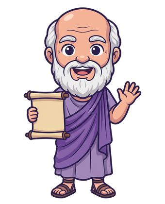
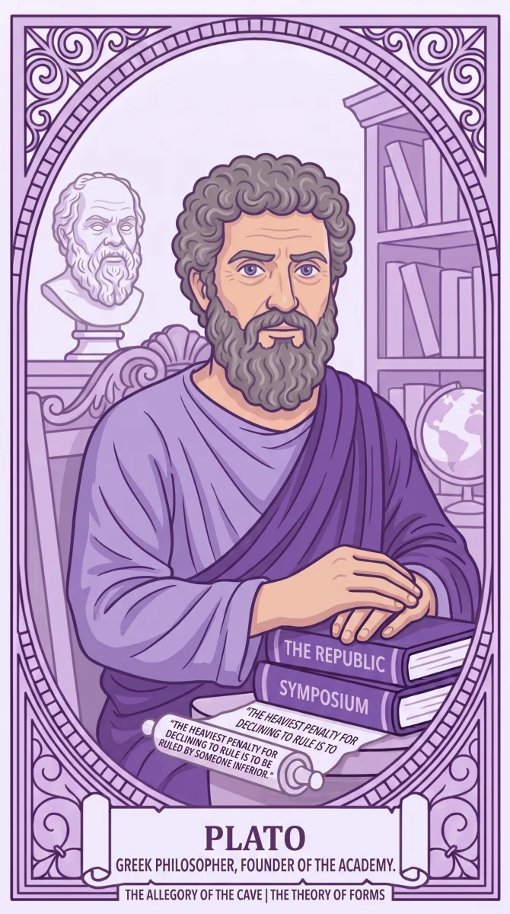
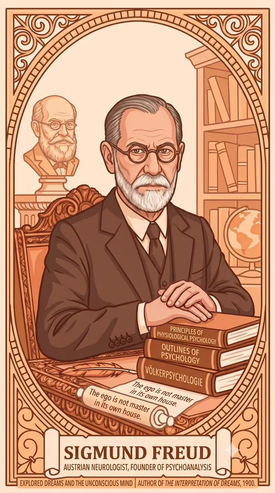

Corpus
×
1
2
3
4
5
6
7
8
9
1
0
Corpus

Continue with Apple
Continue with Google
Continue with email
Other options
Sign In
New here?
Create an account
Corpus
Choose Your Path
Pick a subject to begin. You can switch anytime.
Wisdom for the everyday
How the world works
Understand the mind

אפלטון · סוקרטס · אריסטו
פילוסופיה
חוכמה ליום-יום
סמית' · מרקס · קיינס
כלכלה
איך העולם עובד

פרויד · יונג · ג'יימס
פסיכולוגיה
להבין את הנפש
המשך
0
0
1
Sign in
Corpus
Sign in
0
0
1
0
0
1
0
0
1
0
0
1
שמרו על ההתקדמות שלכם ←
0
ימים ברצף
שתפו את Corpus עם חברים
הגדרות
שפה
עברית
✓
English
מראה
בהיר
כהה
אוטומטי
תזכורת יומית
רטט
התנתק
מחיקת חשבון
מדיניות פרטיות
Your Journey
Corpus
✦
+0
Total XP
0
ימים רצופים
שתפו
עלית רמה!
מדהים!
המשך ←
×
Save your progress
Nice start. Create a free account so your progress is always here.
Continue with Apple
G
Continue with Google
Sign up with email
Maybe later
×
Sign out?
You'll need to sign back in to access your progress on this device.
Sign out
Cancel
Permanently delete your account?
This permanently deletes your account, all your progress (XP, streak, unlocked thinkers), and any subscription. This cannot be undone.
Delete my account
Cancel
corpus
←
←
עברית
English
Corpus
←
←
←
1
12
←
←
←
←
←
←
←
←
←
←
←
←
←
←
←
DAY 6
Corpus
·
←
12
Let's talk
←
←
←
G
רצף · יום 1
הרצף שלך נדלק
מחר בערב הוא יהיה בן יומיים. +50 XP כבר שלך.
להמשיך
היעד היומי
עמדת ביעד היומי
1 מתוך 1
+10 XP בונוס
המשך
?
?
×
Corpus
·
·
·
G
בוא נראה ←
פרק 1 הושלם!
✦
+0
XP הרווחת
0
הוגים שפגשנו
—
דיוק
המשך לפרק הבא
חזרה לבית
English
גודל טקסט
A−
A
A+
מראה
בהיר
כהה
אוטומטי
You've Reached a New Level
Tap to open
Continue